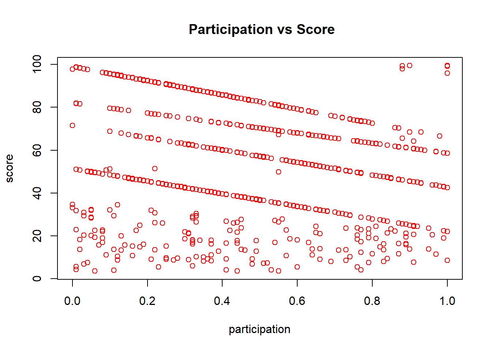
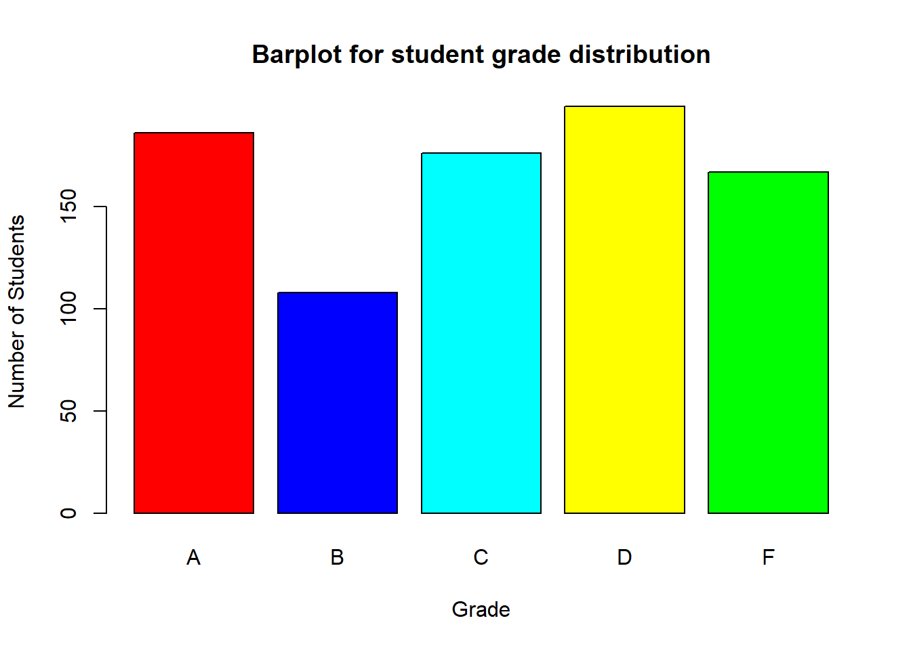
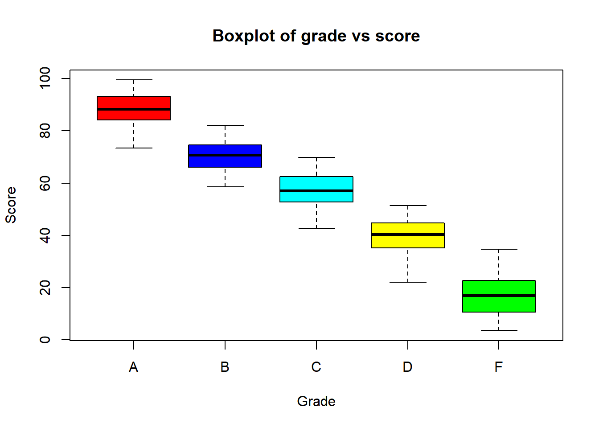
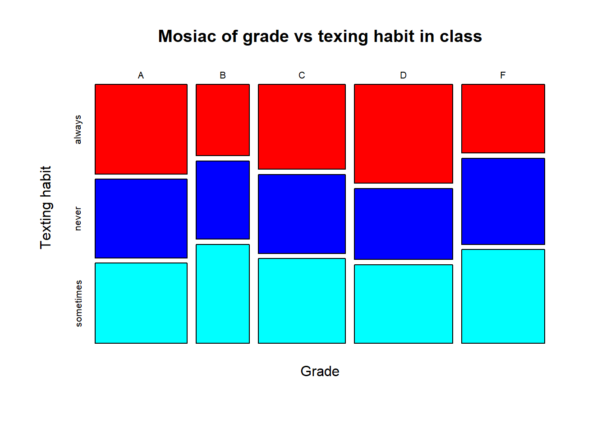

Chapter 2 Plots
| score | grade | texting | questions | participation |
|---|---|---|---|---|
| 26.89 | F | never | never | 0.41 |
| 71.57 | B | always | rarely | 0.00 |
| 90.11 | A | always | never | 0.27 |
| 31.52 | D | sometimes | rarely | 0.68 |
| 95.94 | A | always | rarely | 0.09 |
| 45.72 | D | always | rarely | 0.19 |
| 90.82 | A | always | always | 0.25 |
| 75.52 | B | sometimes | never | 0.28 |
| 52.31 | C | never | never | 0.67 |
| 39.57 | D | always | always | 0.40 |
2.1 Scatter Plot
- Scatter Plot are used to plot points on the Cartesian plane (X-Y Plane)
- Hence it is used when both the labels are numerical values.
Lets look at example of scatter plot using Moody.
# Let's look at a 2 attribute scatter plot.
plot(moody$participation,moody$score,ylab="score",xlab="participation",main=" Participation vs Score",col="red")
2.2 Bar Plot
- A bar plot is used to plot rectangular bars proportional to the values present in a numerical vector.
- This rectangle height is proportional to the value of the variable in the vector.
- Barplots are also used to graphically represent the distribution of a categorical variable, after converting the categorical vector into a table(i.e. frequency distribution table)
- In a bar plot, you can also give different colors to each bar.
colors<- c('red','blue','cyan','yellow','green') # Assigning different colors to bars
#lets make a table for the grades of students and counts of students for each Grade.
t<-table(moody$grade)
#once we have the table lets create a barplot for it.
barplot(t,xlab="Grade",ylab="Number of Students",col=colors,
main="Barplot for student grade distribution",border="black")
2.3 Box Plot
- A boxplot shows the distribution of data in a dataset.
- A boxplot shows the following things:
- Minimum
- Maximum
- Median
- First quartile
- Third quartile
- Outliers
- You can create a single boxplot using just a vector or a multiple boxplot using a formula.
- When you write a formula, you should use the Tilde (~) operator. This column name on the left side of this operator goes on the y axis and the column name on the right side of this operator goes on the x axis.
#Suppose you want to find the distribution of students score per Grade. We use box plot for getting that.
boxplot(score~grade,data=moody,xlab="Grade",ylab="Score", main="Boxplot of grade vs score",col=colors,border="black")
# the circles represent outliers.2.4 Mosiac Plot
- Mosaic plot is a graphical method for visualizing data from two or more qualitative variables.
- The length of the rectangles in the mosaic plot represents the frequency of that particular value.
- The width and length of the mosaic plot can be used to interpret the frequencies of the elements. -For example, if you want to plot the number of individuals per letter grade using a smartphone, you want to look at mosiac plot.
#suppose you want to find numbers of students with a particular grade based on their texting habits. Use Mosiac-plot.
mosaicplot(moody$grade~moody$texting,xlab = 'Grade',ylab = 'Texting habit', main = "Mosiac of grade vs texing habit in class",col=colors,border="black")